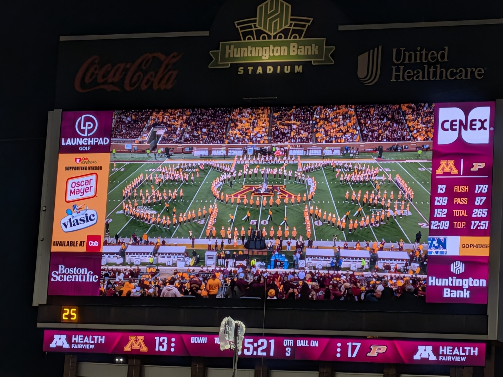
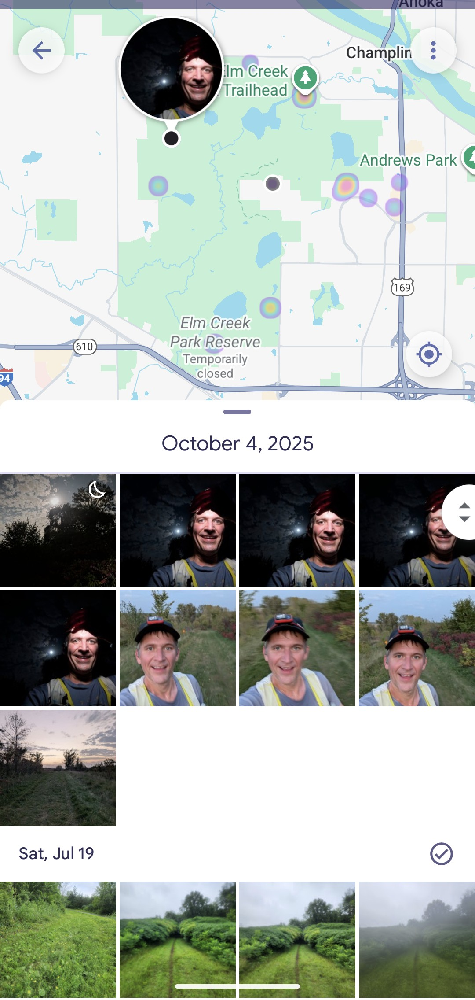

Watched: John Candy: I Like Me 🍿
Love seeing some of the personal side of John Candy’s life.
Revisiting an oldie but goodie: Terminator 2: Judgment Day 🍿
Still hard to believe I saw this in the theater at age 8…

Finished reading: Trust Your Eyes by Linwood Barclay 📚

Finished reading: Black Fridays by Michael Sears 📚

Finished reading: Winter’s Heart by Robert Jordan 📚
During halftime off the Gopher game last night, Chad Smith of the Red Hot Chili Peppers played drums in the middle of the Pride of Minnesota Marching Band. Cool show. Though he definitely wasn’t marching 😉 he was well mic’d and played with his typical enthusiasm.
Here’s an example of seeing photos I’ve taken at the same spot on runs over time. I like how I can see the history of a location. It’s also nice for marking where an off trail cache may live… 🧻🏃
I just finished reading Elantris by Brandon Sanderson — this was fantastic!! I knocked this out fast… Loved it.
 )
)
Got out on a shakeout run with elite ultra runner Courtney Dauwalter… So cool that she grew up in Hopkins! I’m literally standing next to one of the top 5 endurance athletes in the world (and you’d never know it). Met her husband as well and talked with him for 15 minutes. Great night!

Got the boat out of the water and off for winterization and storage. Really happy with our new (to us) boat purchase this year!


A friend of mine told me about Athletic Brewing Co’s NA beer club. I’ve been a fan of their beer and am excited to try the members-only flavors. First Ride is tasty (and caffeinated).

Apple orchard day! Fall Harvest Orchard keeps becoming more of a zoo every year. It’s more of a carnival than it is an apple picking experience. Still got this photo of the kiddos.

Devaluation of AI assistance
This puts a box around a phenomenon I’ve been seeing. While there are real challenges with AI slop, quality AI assisted work is devalued.
Our experiment showed no quality difference in AI-assisted work… This disconnect reveals the path forward—shift from evaluating how work is done to what is accomplished. Replace subjective competence ratings with objective metrics such as cycle time, accuracy, defect rates.
https://hbr.org/2025/08/research-the-hidden-penalty-of-using-ai-at-work
Adding custom instructions to M365 Copilot
I’ve been refining my personal “custom instructions” in M365 Copilot for my work account. I appreciate putting my thumb on the scale of how Copilot responds. 90% of the time it’s great, but occasionally it’ll have some quirky results when those instructions combine with a selected Agent.
Would like to have an “incognito” option to turn my custom instructions off for a single conversation.
Got a backlog of books marked as finished. I’ve had some issues with the Bookshelf app on Android since moving to my new phone. Hoping it’s a temporary thing but may need to post a support request if it persists.

Finished reading: The Survivor by Vince Flynn 📚

Finished reading: To Die For by David Baldacci 📚

Finished reading: Bloody Genius by John Sandford 📚

Finished reading: The Last Man by Vince Flynn 📚

Finished reading: Lethal Prey by John Sandford 📚
Got to try Mount 2 Coast T1 trail shoes at a demo run tonight. Felt pretty good, though I started out with the lower laces too loose.

Getting out to Afton State Park for a run this morning. The sun is peeking through the clouds, thinking about saying hello. 🏃🌤️
I’m thinking of dusting off my “memories vault” project and using Obsidian as the front end. I think it should work pretty smoothly. Gonna think on it some more, but go for it before the new year.
Still feeling the sting of the Gopher football loss last night. Winnable game, but multiple special teams gaffes, dropped passes, and soft coverage cost us our chances.
Now on to the bye week then Homecoming against the Scarlett Knights.
RAH!〽️
Restoring MS Authenticator on a new device
Over the past month, I had to switch phones twice—once due to a hardware issue (phone no longer turns on) then I waited for the new Pixel 10 to come out, bought that, and had to switch again. For the most part, phone swaps are pretty smooth these days. Cloud backups take care of most everything.
One app category that’s an exception is my various 2FA apps. Microsoft Authenticator, in particular, for my work and personal accounts can be a bit confusing, I seem to re-create the process every time, so I’m memorializing my process for re-enabling Microsoft 365 or Azure AD accounts
Why This Matters
If you use Microsoft Authenticator for multi-factor authentication (MFA), switching phones without reconfiguring your accounts can lock you out of critical services. Thankfully, the process to reconnect is straightforward once you know where to go.
Step-by-Step: Reconnecting Microsoft Authenticator
1. Install the App
Download and install the Microsoft Authenticator app
2. Generate a New QR Code
On a computer where I’m already logged in:
- Go to https://mysignins.microsoft.com/security-info.
- Under Security info, click + Add sign-in method.
- Choose Authenticator app > Next.
- Follow the prompts until a QR code is displayed.
3. Scan the QR Code
- Use your phone to scan the QR code shown on your computer screen.
- The account will be added to your Authenticator app.
Other Notes
- Turn on backup for Authenticator: Enable cloud backup in the app settings. Even though each individual account will need to be re-enabled, this will ensure the full list of accounts shows up on the next device.
- Keep the old phone (if possible) until the new one is fully set up. Setting up the second time was a lot quicker because I had the interim device (a Pixel 6)
- Use a secondary method (like SMS or email) as a backup sign-in option. Again, this helps with the recovery process.


Finished reading: Bad Business by Robert B. Parker 📚

Finished reading: Separation of Power by Vince Flynn 📚

Finished reading: Painted Ladies by Robert B. Parker 📚

Finished reading: The Professional by Robert B. Parker 📚


Finished reading: Deadline by John Sandford 📚
My poor dog has been having GI issues for the last day. She just seems annoyed and exhausted and I get it.

Finished reading: Mistborn by Brandon Sanderson 📚
Family camping with kids school friends at St Croix state park. Beautiful park and a wonderful time! We climbed the fire tower there, it was great!

Really happy with my early experiences using GPT5. So far I’ve tried it in GitHub Copilot as well as in ChatGPT.

Finished reading: Memorial Day by Vince Flynn 📚

Finished reading: In Too Deep by Lee Child 📚

Finished reading: Executive Power by Vince Flynn 📚

Finished reading: Rules of Prey by John Sandford 📚
Didn’t sleep well, preoccupied with my upcoming race. I was dreaming/waking thinking about pacing and doing mental math to hit goal times.

10+ years after adding it to my reading list… Finished reading: Lonesome Dove by Larry McMurtry 📚 wow what an experience. Thanks Gramma for inspiring me. Miss you. 🐎🕊️
Enabled a new email domain for sign-ups. Have been using one before now, but it was tied to a personal domain. The new one is fewer characters (5), is a .com, and not linked to any of my PII. Have been planning this for months, enough “big rock” projects have completed so this is the time!

Finished reading: Twisted Prey by John Sandford 📚

Finished reading: Extreme Prey by John Sandford 📚


Finished reading: Annabel Scheme (paperback book) by Robin Sloan 📚 didn’t know what to expect, fun ride!
New fiscal year at Microsoft started this month, so now it’s kick off season. Grateful that they’ve included real breaks to keep us fresh.

Finished reading: Gathering Prey by John Sandford 📚
Enjoyed Monster Jam with my son, I love being able to share the thrill of big trucks doing cool things for no reason but to be exciting. 🏁


Finished reading: The First Rule of Mastery by Michael Gervais 📚

Finished reading: Silent Prey by John Sandford 📚
Enjoying the calmness of the lake after a busy (and beautiful) day out there. The community here delayed the amateur fireworks to tonight, so feeling ready for sparks and booms. 🎆🎇


Finished reading: Past Tense by Lee Child 📚
28 Years Later 🍿🎥 was better than I expected.
First time experience: I was the only car left in the Drive-In watching this through to the end (final movie of the night). Everyone else left before it started or during the movie. I suppose it was late…
F1 🍿🎥was a fun movie but the stakes seemed low both for individual characters and the collective. Favorite character was the investor, who reminded me of the blood sucking lawyer in the original Jurassic Park.

Finished reading: The Third Option by Vince Flynn 📚
Was reminded by @ericmwalk that I too was very close to a deer on a recent run. Adding here for posterity. 🏃🦌


I just learned about Libro.fm and it looks great. Anyone have experiences (good or bad) that they’d like to share?
I’m not an Audible user, but I do use Libby for content from my local library system, probably 4 audiobooks per month. I’d be looking to augment my Libby usage, not replace.

Finished reading: The Way of Kings by Brandon Sanderson 📚 First time reading a Sanderson novel, excited for more!
The Wierd Al show at Treasure Island last night was fantastic! He’s still crushing it and full of energy.
I put together a playlist of his set to commemorate the night.


“The purpose of a storyteller is not to tell you how to think, but to give you questions to think upon.” Love this quote from The Way of Kings by Brandon Sanderson 📖
Got the kids to watch The Muppet Movie 🍿🎥 with me. They’re finally old enough to sit through a slower-paced feature-length movie and it makes me so happy!
Final cub scout meeting of this year, what a gorgeous evening for it! Sunny, 70’s, and a light breeze.
Feeling energized after Kettle 100k, thinking about swapping out Voyageur 50mi and replacing with the Badger 100mi. I’m still planning on Superior 50mi after Labor Day. 🤔💭🏃 I have another 8 days to decide…
Got back out running this morning. I expected a longer recovery after my first 100k, but I’m feeling good! I felt like I could have tried on Tuesday, but forced myself to wait until today. The Waiting was the hardest part. 🏃🌻

Finished reading: Extreme Measures by Vince Flynn 📚 started and finished this one during my recent race. 🎧🏃

Finished reading: Prey by Michael Crichton 📚 interesting reading this in 2025, with the discussion of AI and Agentic system design. Now we’re discussing software agents instead of contemplating nanotech. Fun read.
Amazing day running the Kettle Moraine 100k. I felt great and finished ahead of my goal time. Grateful for my family and Crew joining for the day as well as the very cooperative weather 🌞🏃🔔


This is spot on when it comes to dev work… My AI Skeptic Friends Are All Nuts


Watched The Music Man (1962) 🍿🎥 with the CBB Presents Watchalong audio. So fun 🎺 🥁
Apparently Jess has now seen the movie with me more times than she’s seen it alone (3 or 4)
Had my last long run before Kettle Moraine 100k this weekend. Couldn’t help but stop to snag a photo of the flowers along the trail 🏃🪻

Finished prepping food for my son’s birthday party tomorrow. Grapes, pineapple, watermelon, carrots, celery, dip, and 4 kinds of chips. Cupcakes for dessert. Lemonade, sparkling and still water. Pizza order in and scheduled. The kids helped by stuffing the party favor bags. Looks like the weather will cooperate, too! 🎉

Finished reading: The Midnight Line by Lee Child 📚
Watched Rogue One: A Star Wars Story 🎥🍿
Today I learned that the MSP Terminal 1 Caribou by F/G gate split has an XL size…didn’t need it today but there are definitely those days where I’ll take advantage ☕☕☕

Finished reading: The Affair by Lee Child 📚


Just finished Mission: Impossible – The Final Reckoning. Slow start but fun action 🍿 🎥

Finished reading: Neon Prey by John Sandford 📚

Finished reading: Transfer Of Power by Vince Flynn 📚

Finished reading: Passions in Death by J. D. Robb📚. 😒

More from scout camp this weekend. They were proud of getting that dead limb into the river. Teamwork!


Finished watching Andor tonight. Whew…what a ride. If only I could bottle this up and infuse it into every Star Wars property.

Finished reading: The Waiting by Michael Connelly 📚

Finished reading: Kill Shot by Vince Flynn 📚

Working from the IDS Tower Club today. I love that I can trace so much of the Twin Cities marathon route from up here.


Finished reading: The Fix by David Baldacci 📚
No school today… Because.? Nice that they could get a mix of video games, outside play, and classic Inspector Gadget cartoons 💻 📖🚨

Finished reading: High Profile by Robert B. Parker 📚

I got this spam marketing email a few hours ago and have been trying to process this combination of things that Instacart has grouped together for me. It does sound intriguing–I hadn’t considered Casamigos, Taco Bell, and Tostitos as an order–but I don’t think this ad will convert.

May is here. Days are ramping up, gonna be a busy time through mid-June…feeling ready for it but lots cooking. High workload at the office, kids activities, longest yet ultra race in June, end of the school year. One step at a time.
Watched The Polka King (2017) tonight…loved it! I forgot I was watching Jack Black and don’t think anyone else could have nailed the role that well. 🎥
Midday run today, first time taking the Singletrack at Lone Lake Park. Beautiful day and a great 5 mile trail. 🏃


Finished reading: The Path of Daggers by Robert Jordan 📚

Finished reading: Pursuit of Honor by Vince Flynn 📚

Feeling recovered from last week. Got out for 20 miles on my run, then watched the Elm Creek Backyard Ultra participants finish yard 24 (100 miles). 13 met that mark, then 7 continued on 🏃

Checked out four different local parks with my son to stack rank for his upcoming birthday party. The rain was not an issue and we now have a clear order in mind. Fingers crossed for availability 🤞😉

Spent some time outside doing spring yard work after work today. Perfect late afternoon/evening for it!
Still feeling sore after my race Saturday. That didn’t stop me from getting out for a walk with my wife and the dogs today. 🌞

Finished reading: American Assassin by Vince Flynn 📚 listened to this one during my run today…end to end 🏃 📖 👂


Got my last run 🏃in before the Storm the Park 50K today. I’m excited for the long run with some terrain and vert. 8000+ feet of elevation coming for my 50K…
First time trying a Jalapeño IPA. Birch’s on the Lake in Long Lake had it. Good spiciness 🌶️ but still easy to drink.
Was out with the Tuesday Night Trails group and got to chat with Isaac, the new primary owner of Gear West. Excited for their future!

Returned the kids' seasonal ski rental gear today. It was a fantastic season with lots of growth for both of them!
It’s also a nice milestone to mark the changing of seasons. ❄️ 🌦️ 🌞
I volunteered at the Zumbro Endurance Runs over the weekend. It was great to give back to the trail running community. Way to go runners! What a weekend and I even got out for a couple of my own runs during breaks… 🏃👍


Finished reading: Dirty Thirty by Janet Evanovich 📚every once in a while I try one of these Evanovich novels then remember why I usually don’t. 😒

Finished reading: Toxic Prey by John Sandford 📚 my first off the Lucas and Letty variation, an unmarried Davenport takes on some characteristics of Reacher…
At 8:02am today, Xfinity texted me about internet outages until 6pm because of “Service Improvements”. Really wish I had notice before the work day. Grateful I could rush into my local office to do my scheduled presentations. 🙄

Finished reading: Golden Prey by John Sandford 📚 Oh Lucas, how I’ve missed your adventures.
Wow, today was end to end busy. The best part was playing tag with my kids. I love the excited squeals they make when they just barely get past me 😁
Nice run tonight through Purgatory Park and Edenbrook Conservation Area. Enjoying the spring weather and the good company 😊🏃

Finished reading: Ocean Prey by John Sandford 📚 that makes 5 books during this spring break. Been a while since I could claim that… Felt great!

Pontoon update–we have a deal! Working through the payment and title transfer process, then will have a few things done (removal of trolling motor, re-installation of the bimini and front gate, cleaning) before we take delivery. We’re excited!

Finished reading: Make Me by Lee Child 📚 a darker theme as far as Reacher books go…
My wife and I have been eyeing new (to us) pontoons to replace the one we have that’s from 1986. Our timing may be perfect…within an hour of chatting with the guy who stores our current boat, he learned of a friend who needs to sell his boat that fits our needs very well. Checking it out tomorrow!

Finished reading: Personal by Lee Child 📚 I love being able to fly through my reading list when I’m on a relaxed vacation.

Finished reading: Relentless Forward Progress by Bryon Powell 📚 good read, I appreciate the little stories from the author and other contributors. Excited for the 2025 season!
I love running at the Stahl’s Lake Trails. They wind and weave crisscrossing in a way that just feels good. Mostly single track, I can get 6 miles in this little park without doubling any one section. 🏃❄️☁️


Spent a good 3 hours pondering different aspects of some of my upcoming races for the year. I’m thinking about several, but the Kettle Moraine 100k has taken the most mindshare. It’ll be my longest race so far. While I’m confident I’ll be ready, it’s still taking up a fair bit of headspace.

Finished reading: The Sorcerer’s Daughter by Terry Brooks 📚 The third (and final) book in nice little trilogy.

The post-with-image test took a little more work than I’d hoped. The micro.publish plugin didn’t automatically upload the image and update my image link. I needed to upload separately then copy over the markdown myself (less than ideal, but doable)
Trying a second post, this time it’ll be one that includes a picture. This one was from the Ron Daws race I ran earlier today.
 (see above)
(see above)
I primarily use Windows for my day-to-day, and Obsidian may be useful for my blogging workflow. Giving it a shot with the micro.publish plugin. This is a test, it is only a test (though I’ll keep it here for posterity).
Ran in the Ron Daws 25K today… The rain held off and I ended up with a surprise half marathon PR (plus 2.5 bonus miles). I’m feeling good at this early point on the season. 😊🏃


Jersey Mike’s for lunch today, they’re donating 100% of sales (not just profits) to Special Olympics. Tasty… 😋


Tonight I finished reading: The Darkling Child by Terry Brooks 📚 I like having some shorter books like this that I can crank through before driving into another big one.
Welcome to Minnesota, Coach Medved! 🏀 Niko Medved Named Head Men’s Basketball Coach

Finished reading: Stillness Is the Key by Ryan Holiday 📚 I particularly appreciated the discussion of “Leisure” near the end. It’s a good way of characterizing why I run these days.

Finished reading: The Black Prism by Brent Weeks 📚 yeah, that was a fun one!

Did a late-season fire this afternoon. It was the kids' idea, though they got distracted by Mom’s iPad…my daughter came back around later to do some flame-watching with me. I enjoyed reading some of my new book Relentless Forward Progress 📚

Great day today. I felt great on my morning run. Work was busy end-to-end, but made good progress on things. Also, my NCAA bracket isn’t busted, so that’s nice.
March Madness has begun! My day 1 upset picks have not panned out…but I have some aggressive picks down the stretch. I still have good upside but the odds seem longer already 🤞
I got micro.blog bookshelves working after a bit of fumbling around. Now I’ve backfilled the books from this year. My active fiction book is The Black Prism by Brent Weeks 📚
Got out to Long Lake for some trail running tonight…good group of us out there! A bit slick and muddy in spots, but a wonderful time in the woods.

Every time I see this implementation of a bar graph I shake my head… It’s just wrong in so many ways 😶🌫️


With the nice weather yesterday my son tried his bike without training wheels, which was the bar to meet for getting his next (bigger and appropriately sized) bike. Found him some new wheels at a local bike shop.

Broke my run into two parts yesterday, with brunch at The Block in the middle. Definitely slower on the return voyage, but I think that was more the temp change (+20°) than the food in my stomach 🌡️
Didn’t realize that Brandon Sanderson has a video about the suggested reading order for his books. Of course he does. I’ll take his advice and start with 📚 Mistborn…unless someone out there strongly suggests otherwise.


Before and after… Blustering winds added a light coating after I passed through. ❄️ Hoping I can get out of the neighborhood…


Current audiobook started over the weekend… so much more depth than the movies. I appreciate the intrigue.

Got out for a nice Muddy Monday run at Elm Creek. Sunny and 50 is still so weird for this time of year in MN. 🏃


Skijammers Family day at Wild Mountain was a success! My daughter has made tremendous progress this season and it was a joy to have both kids skiing together today.


Listened to this podcast episode which chronicles a song (Rooms, by Megan Banning) that took a 40 year journey getting to live ears, then lets us hear the moment it arrived. Really cool. Hyperfixed podcast: Two birds, one hundred stones
I’m helping my son with his Pinewood Derby car. He designed it, we did the wood working today, and it’s almost ready for painting. I’ll bet his is the only one with a windhield when he races. 😎 🚗

Despite being a bit slippery in some spots, it was a gorgeous morning for my run. It was really cool seeing the ground shimmer and sparkle like something out of a video game. Tough to capture in a still-shot but as I ran it was like a million mini sparkling lights ✨
Finished reading 📚 The Late Show. Quick mystery/thriller. A nice palate cleanse before my next big fantasy novel.
Listened to the Robinhood CEO Vlad Tenov on the Hard Fork podcast… Was unimpressed and he squandered an opportunity to build trust 👎. Instead it was more like listening to a pure fanboy that’s unwilling to acknowledge any grey area. Episode: Hard Fork podcast, interview starts at ~25:05
I did my run later in the afternoon today…in shorts! (in MN in February) It was still 50° when I started but it definitely felt colder 90 mins later as the sun went down.


Getting excited for the new Vulfpeck album. As a bad player I can help but love this solos but the groove is so tasty ❤️🎶🎧 Vulfpeck - New Beastly
It was a perfect day for skiing at Trollhaugen. Got out with my youngest along with the SkiJammers sibling group. He’s made so much progress this year! Feel so fortunate to have a group of families with similarly-aged kids who are also interested in skiing.


Broke up my run into two parts today… That’s how the schedule worked out. Part 2 was warmer than part 1.
Looking forward to the weekend 🌞
Had a work event at Office Golf today, it was a lot of fun! I didn’t bring my own clubs (they’re away for the season) but it was still good to stroke a few. I’d definitely go back!
My body is continuing to recover from the race last week… And it’s still cold outside. Before and after picture from my run this morning. 🏃

Always get a laugh when I come back to missed chats and one of them is a super long thread of devs posting numbers for agile planning poker 🃏
Deposited my quarterly Solar Rebate this morning. Love being energy neutral at home. Still on track for <10 year payback on the investment in solar panels.
After mentioning my journal, I thought I’d post a link to the publisher of my 10-year journal…but they appear to be out of business! ☹️ I have a couple of years before I need my next volume, but it’s sad to see they last published in 2022. –Journal10
Still very cold out there today, our kids school start was delayed to let things warm up, other schools are canceling outright. I suppose it has warmed up a bit…

My wife and I have really enjoyed playing Wingspan. Fun, competitive (but not cutthroat), and gorgeous.

Productive day in the cold:
- worked with the fam on some tidying projects
- cleaned some food out of the pantry that’s been there long enough
- played some Uno Flip with my daughter
- updated my navigation and social links on my personal website matthewcanderson.com
- caught up on my paper journal
Another one of those chilly days today… Grateful to have a nice warm home and the choice to stay in.

Got out for a nice 🌞🏃 today, even though it’s cold out there. Wrapping a light mileage week after a race, feeling stronger each day, will continue ramping this week.


Watched The Instigators 🍿👍

I’ve started back into A Crown of Swords by Robert Jordan 📚 I’d made good progress through book 6 of the series, but paused a couple of years back when I changed roles at work. Excited to be back at it.
I felt ready to get out running again today… my Garmin agreed (after a couple days at 1 then 19). It’s a lot colder out back home in Minny compared to Arizona. Still glad to get back out there!

I’m hoping I’ll be recovered enough to get out running tomorrow. Signs are good based on the game of tag with my kids tonight 🌞
Using the recovery room at my running gym. Normatec sleeves have been a great help to get my legs get back to normal after a race.


First Post
Welcome to my corner of the internet! This is my very first post on Micro.blog, and I’m thrilled to start this journey with you all. 🌟
A little about me: I’m passionate about making memories with my kids, and I love sharing my thoughts and experiences on technology, running, and random thoughts.
Why Micro.blog? I’m choosing this platform because of its simplicity and the wonderful community it fosters. I’m hoping that Micro.blog will let me radically simplify my posting process and give me an outlet for little notes that aren’t longer blog posts. It’s a place where I can share my ideas, connect with like-minded individuals, and grow as a writer and creator.
Stay tuned for more posts, and feel free to reach out and say hi! Let’s embark on this adventure together.